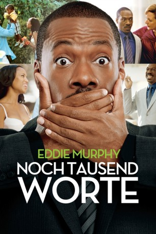
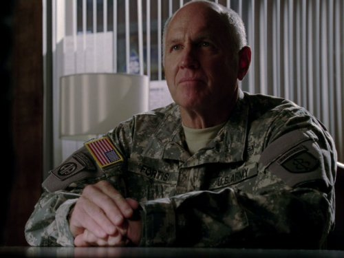

#6490 Noch Tausend Worte
Alternativ: A Thousand Words
 
 IMDB-Wertung: 5.9 / 10
IMDB-Wertung: 5.9 / 10  Metascore: 0
Metascore: 0 
Der geschwätzige Jack McCall ist als Literaturagent nicht nur ein beinharter Geschäftsmann, sondern auch ein chronischer Aufsager. Als er einen Kunden, den Guru Dr. Sinja, über den Tisch zieht, belegt dieser ihn mit einem Fluch. Von da an ist er mental mit einem Baum in seinem Garten verbunden und mit jedem Wort, das er von sich gibt, fällt ein Blatt des Baumes. Wenn alle Blätter gefallen sind, stirbt nicht nur die Pflanze ab, sondern auch Jack selbst. Doch der Baum hat nur mehr 1000 Blätter, also bleiben dem Geschäftsmann ebensoviele Wörter. Auch seiner Familie, Ehefrau Caroline und Sohn Tyler fällt schnell auf, dass der Vielredner Jack plötzlich seine Worte mit Bedacht wählt. Zu recht, denn er sollte sich gut überlegen, was er sagt...
Jahr: 2012
Dauer: 91 Minuten
FSK: 0
Land: USA Studio: Paramount PicturesTonspuren: DD5.1 - ,
Untertitel: Deutsch,
Auflösung: 1080p (1920x800) Größe: 5591 MB
Genre: Drama, Komödie
Regisseur: Brian Robbins
Drehbuch: Steve Koren
Soundtrack:
Darsteller:
 Eddie Murphy als Jack McCall
Eddie Murphy als Jack McCall Kerry Washington als Caroline McCall
Kerry Washington als Caroline McCall- Jill Basey als Woman in Starbucks
 Greg Collins als Construction Worker
Greg Collins als Construction Worker- Michael G. Wilkinson als Starbucks Customer
- Lou Saliba als Shrink
 John Gatins als Valet
John Gatins als Valet Clark Duke als Aaron Wiseberger
Clark Duke als Aaron Wiseberger Cliff Curtis als Dr. Sinja
Cliff Curtis als Dr. Sinja- Mitchell Fink als Male Agent
- Edi Patterson als Young Female Agent
 Allison Janney als Samantha Davis
Allison Janney als Samantha Davis- Emily A. Burton als Crying Student
- Tracy Mulholland als Young Student
 Ruby Dee als Annie McCall
Ruby Dee als Annie McCall- Kayla Blake als Emily
 Leonard Earl Howze als Orderly
Leonard Earl Howze als Orderly- Jack McBrayer als Starbucks' Barista
- John Witherspoon als Blind Man
- Bethany Dwyer als Mary
 Alain Chabat als Christian Léger de la Touffe
Alain Chabat als Christian Léger de la Touffe- Sara Holden als Hostess
 Lennie Loftin als Robert Gilmore
Lennie Loftin als Robert Gilmore- David Burke als Gil Reed
- Jeff Kahn als Waiter
 Matt Winston als Kid Space Teacher
Matt Winston als Kid Space Teacher Philip Pavel als Overly Enthused Dad
Philip Pavel als Overly Enthused Dad- Raquel Bell als Kid Space Mom
 Phil Reeves als Don Parker
Phil Reeves als Don Parker- Kamala Jones als Hotel Employee
- K. Harrison Sweeney als Rotund Man
- Brian Gallivan als Tony
-  Steven M. Gagnon als Ira
- Lauren Schuchman als Waitress
- Darcy Rose Byrnes als 10 Year Old Girl
- Eshaya Draper als Young Jack
- Sarah Scott Davis als Young Annie
- Bunny Levine als Woman on Pier
- Brian R. Norris als Steven
 Moises Amaya als Man on Pier , uncredited
Moises Amaya als Man on Pier , uncredited- Andy B. Dardaine als Co-Worker , uncredited
- Gina Fricchione als Literary Agent , uncredited
- Michela Lansing als Nun , uncredited
- John Robert als Man in Hat , uncredited
 Ariel Winter als Lila , uncredited
Ariel Winter als Lila , uncredited- Emanuel Ragsdale als Tyler McCall
- Robert LeQuang als Starbucks Customer
- Lyndsey Nelson als Starbucks Customer
- Michael Cody Gilbert als Starbucks Customer
- Brad Keimach als Sinja Aide
Datei: X:\2012(N-Z)\Noch Tausend Worte (2012, FSK0, 1920x800).mkv seit 28.06.2017
Festplatte: HD 2012(N-Z)-2013(A-H)
 Es gibt insgesamt 138 Filme in der Gruppe '2012(N-Z)'
Es gibt insgesamt 138 Filme in der Gruppe '2012(N-Z)'